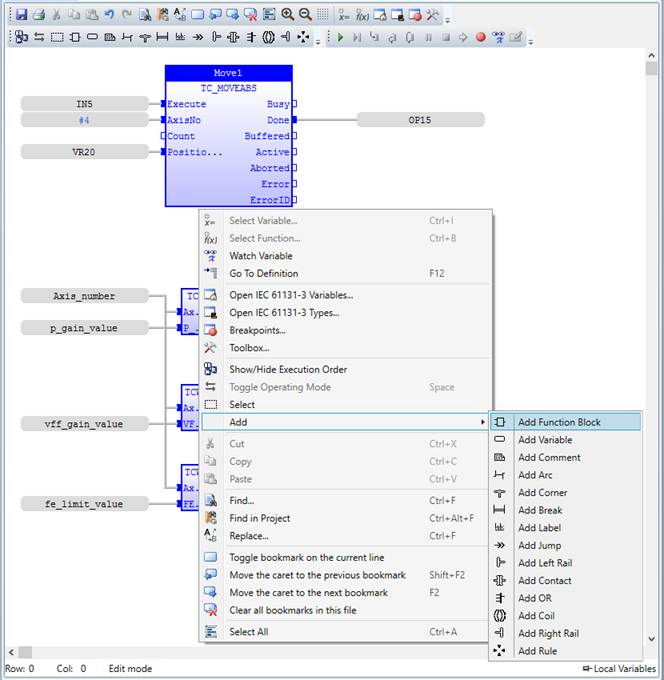

The Function Block Diagram is a graphical programming language. The FBD editor is a powerful graphical tool that enables you to enter and manage Function Block Diagrams according to the IEC 61131-3 standard. The editor supports advanced graphic features such as drag and drop, object resizing and connection lines routing features, so that you can rapidly and freely arrange the elements of your diagram. It also enables you to insert graphical elements, such as contacts and coils
FBD describes the processing required between input and output variables and is defined using a set of elementary blocks, each block having inputs and outputs that may be inter-connected thus:
The connection is oriented, meaning that the line carries associated data from the left end to the right end. The left and right ends of the connection line must be of the same type.
Double-clicking on a contact or a coil displays a dialog for selecting the input/output for the element.
Double-clicking on a function/function block displays a dialog for selecting the function/functional block for the element.
The editor contents can be zoomed in and out via the toolbar buttons, or using the shortcut combinations “Ctrl +” for zoom in and “Ctrl -” for zoom out.
The FBD editor context menu has the following functionality:
|
Menu Entry |
Action |
|
Select variable |
Displays a dialog for inserting/selecting a variable |
|
Select function |
Displays a dialog for inserting/selecting function block |
|
Watch Variable |
Add selected variable to Watch Variables Tool for monitoring |
|
Go To Definition |
Open Variables editor and navigate to the selected variable |
|
Open IEC 61131-3 variables |
Open the IEC variables tool |
|
Open IEC 61131-3 types |
Open the IEC types tool |
|
Breakpoints |
Open breakpoints manager window |
|
Toolbox |
Open toolbox control, from where using drag and drop functions and function blocks can be added to the program |
|
Show/Hide Execution Order |
Show or hide the execution order of elements in this FBD program |
|
Toggle Operating Mode |
Set or remove a Boolean negation on the selected line |
|
Select |
Enters in selection mode |
|
Add function block |
Enters in add function block mode |
|
Add variable |
Enters in add variable mode |
|
Add comment |
Enters in add comment mode |
|
Add arc |
Enters in add arc mode |
|
Add corner |
Enters in add corner mode |
|
Add break |
Enters in add break mode |
|
Add label |
Enters in add label mode |
|
Add jump |
Enters in add jump mode |
|
Add left rail |
Enters in add left rail mode |
|
Add contact |
Enters in add contact mode. See contacts in the language reference. |
|
Add OR |
Enters in add OR mode |
|
Add coil |
Enters in add coil mode. See coils in the language reference. |
|
Add right rail |
Enters in add right rail mode |
|
Add rule |
Enters in add rule mode |
